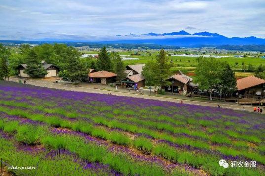

事关“钱”途的重要大事，一定要看！
虽然现在农业很热，但很多农业人却遇到困境，比如现在粮价大跌，就令很多人愁眉不展，甚至着急上火。任何行业的发展都会有一个过程，在经历过困境后，总会为之一变。而作为受政策影响很大的农业来说，也即将迎来一场翻天覆地的变革！
2017年：全面落实深化农业实践将成重头戏！
从十八届三中全会开始，中国农业拉开了改革的序幕，释放了百万亿的改革红利。2014年的四中全会将农业改革推向高潮，也是从2014年起，中国农业发展进入了黄金十年。从历届政策发展及当下国情来看，农业的发展与改革都是主基调。而今年的一号文件中，明确提到以“供给侧改革”为核心主线，全面推动农业改革！
布局未来5年农业大局！
2017年开启了一个新的农业格局，那么在未来的农业发展中，哪些将成为重点改革对象？哪些又是农业朋友需要重点关注的呢？
★重点1：农业产业布局的调整。从产业布局到项目、模式等，都将有重大突破。
★重点2：惠农扶持资金重点扶持方向！按照惠农补贴资金每年递增15%的规律核算，2017-2020年涉及十多万亿的扶持资金！
★重点3：合作社、农企等经营主体的发展方向，农业项目发展和农产品电商，以及新农村建设等一系列农村、农业发展问题，与此同时，也将释放出百万亿的农业红利！
农业未来重大商机提前看（部分）
3月1日-4日，北京天信亮酒店，第126届农合论坛，为您最权威解读未来5年农业重大利好，帮您抓住这场大变革中的重大红利，提前布局未来5年农业大局！
变革一：粮食“危机“或将有变
粮食安全是首当其冲的重要问题。在未来5年，一方面国家会继续大力支持适度规模农业的发展，确保土地非农化、非粮化；另一方面，会适时推出对糖类、油料等产品的差价补贴政策，进一步扩大“绿箱”支持，同时，也会提高农业保险的补贴力度。对于当前粮价下跌情况，国家有望出台相应调整政策。
变革二：合作社机遇重大
根据农业部发布的最新数据显示，我国农业现代化效果已逐步显现，生产方式调整取得成效。目前家庭承包耕地流转面积比重已超过30%，种养大户、家庭农场等经营主体大幅提升。未来农业发展中，合作社、农企、家庭农场、种养大户等新型主体将发挥主要带动作用，扶持力度也会更大。
变革三：生态农业盈利空间巨大
农业生产的环境负效应日益突出：农业资源过度开发、农业投入品过量使用、地下水超采以及农业内外源污染，这些资源问题不仅阻碍了农业发展，并且相互叠加。因此，未来这几年，国家将加大对农业资源环境保护和生态建设的支持。
春来到，更种时节还会远吗？润农金服专注服务三农，您还在发愁翻地、更种、种子费用吗？润农金服帮您一步到位的解决农业所需！